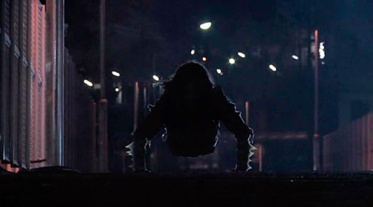

Entre los japoneses circula una escalofriante leyenda que habla de un espíritu femenino al que le falta la mitad inferior del cuerpo. Dicen que se arrastra con las manos (terminadas en dedos largos, con garras que pueden cortar carne como mantequilla) y que se desplaza haciendo un sonido del cual recibe su nombre: “Teke Teke”.
La versión más difundida cuenta que, en vida, aquel espectro era una joven mujer, que esperaba el tren pero cayó en las vías, no tuvo tiempo de escapar de una muerte horrenda en la que su cuerpo, fue partido en dos… Muy probablemente algunos la vieron caer y no la ayudaron, ya que el Teke Teke es un fantasma que arde en ira, buscando afanosamente compartir con cuantos pueda su amargo destino.
Así, cuentan que ha empujado a personas que estaban esperando el tren, que ha atacado con sus garras dejando caras y espaldas sanguinolentas, o incluso, según los más extremistas, que es capaz de arrastrarte y lanzarte a las vías del tren o, si te la encuentras solo en alguna oscura noche, puede destrozarte y usar sus garras para dividir tu cuerpo en dos. Pero el asunto va aún más lejos; pues, en cualquiera de los casos en que la víctima muere, la versión extrema de la leyenda afirma que se convierte en otro “teke teke” más…

La historia del escolar asesinado
Esta historia, supuestamente real, es ampliamente conocida entre los escolares japoneses. Trata sobre una víctima del fantasma y es como sigue:
Un estudiante de una escuela solo para hombres salió más tarde de lo debido, cuando de pronto, antes de que abandonara el colegio, escuchó un extraño ruido detrás de él. Inquietado, el muchacho se giró y vio que, observándolo desde una de las ventanas del segundo piso de un edificio lleno de aulas, estaba una hermosa chica de misterioso aspecto.
Ella lo veía con los brazos apoyados en el alféizar y la cara entre las manos, él no podía ocultar el asombro que le producían aquellas dulces facciones y aquellos ojos negros, profundos y templados. ¿Qué hacía una chica así en un colegio de hombres? Él no lo sabía, y dejó de importarle cuando ella sonrió coqueta y maliciosamente, pero este no fue más que el principio del fin, porque tras un par de segundos ella saltó por la ventana y cayó al pavimento, sin destrozarse, y revelando que su cuerpo carecía de mitad inferior…
Congelado por el terror, el muchacho la vio arrastrarse con los brazos, haciendo un ruido que era como
“tek, tek, tek, tek, tek”… Trató de gritar pero la voz no le salía, trató de salir corriendo pero sus piernas solo podían temblar y temblar… Ahora sabía que se trataba del Teke Teke, pero era demasiado tarde; y ella, que iba dejando una estela de sangre nacida de sus órganos expuestos, saltó violentamente sobre él, sacó una guadaña —así dicen, aunque es más creíble pensar que lo mató sin guadaña— y lo cortó en dos, condenándolo con ello a ser otro “teke teke” más.
Segunda versión
Una joven estudiante recibía semanalmente muchas bromas por parte de sus compañeros de estudio, y una día los jóvenes deciden realizar una broma muy pesada, para ello le colocaron un insecto muy grande en el hombro, la chica se dirigía hacia la estación del metro y cuando estaba cerca del andén observó el insecto, tamaño fue el susto de la muchacha que cayó en los rieles del metro, por mala suerte que el mismo venía pasando en ese momento.
El vagón acabó con la vida de la joven, cortándola en dos partes, los jóvenes no se habían percatado de lo sucedido sino hasta pasar un rato, cuando por excusa dijeron que la muchacha se había lanzado a los rieles del metro por estar depresiva, el cuento se propagó por toda la ciudad y así mucha gente lo creyó.
Pasado un tiempo los mismos jóvenes se encontraban camino a la estación del metro y de pronto comenzaron a escuchar un extraño ruido parecido a un chasquido, cuando de pronto observaron a la joven que se arrastraba por el andén sostenida de sus brazos bañada en sangre y sin la parte inferior de su cuerpo, aterrados, los jóvenes deciden escapar, lo cual no logran ya que la chica corta a los tres por la cintura acabando con sus vidas y comenzando una leyenda urbana